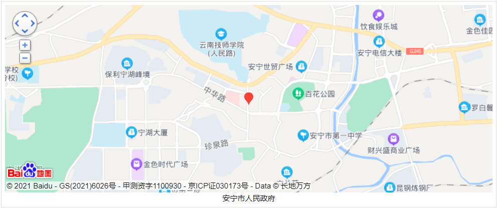

安宁 （云南省县级市）
安宁市，云南省直辖县级市，由昆明市代管。位于昆明市西南32千米处，是通往滇西8个地州，并经畹町直接与缅甸相连的交通重镇。东北与西山区相连，东南接晋宁区，西邻玉溪市易门县、禄丰市，总面积1301.81平方千米 [1] ，平均海拔1800米。2019年平均气温16.9℃，年降雨量749.1毫米，日照时间2260小时。1995年撤县设市，安宁市辖9个街道办事处，有63个村民委员会，36个社区居民委员会。 [1-3] 根据第七次人口普查数据，截至2020年11月1日零时，安宁市常住人口为483753人。
安宁历史悠久，被誉为“螳川宝地，连然金方”。安宁地理优越、交通发达，320国道直通缅甸，昆安、安楚高速，成昆铁路等穿境而过，安晋高速、昆广铁路复线已开工建设，柏油路直达各行政村。安宁距昆明32公里，是昆明通往滇西8个地州，并经畹町直接与缅甸相连的交通重镇。
2019年以来，先后被评为2019年度全国综合实力百强县市 [4] 、2019年度全国新型城镇化质量百强区、 [5] 2019中国西部百强县市、 [6] 2019全国营商环境百强县、2019年全国投资潜力十强县(市)第一名、全国乡村治理体系建设试点单位。 [7] 2020年12月，社科院发布《全国县域经济综合竞争力100强》，安宁排名第43 [8] 。 2020年，安宁市实现地区生产总值(GDP) 572.36亿元，比上年下降2.1％。

地理环境
安宁地处昆明西郊，距昆明主城区28千米。介于东经102°8'～102°37'和北纬24°31'～25°6'之间。南北长约66.5千米，东西宽约46.4千米，总面积1301.81平方千米，东面和东北面与西山区接壤，西面和西北面与禄丰市交界，南面和东南面与晋宁区相连，西南面与易门县毗邻。
自然资源
矿产资源：安宁市自然资源丰富。矿产资源主要有磷、盐、铁、钛、锡、铜、锌、铝、硅、铝土矿、石英砂、石灰石、白云石及花岗岩等诸多矿藏。境内盐矿储量居全国内陆型盐矿第二，平均品位58.8%，仅次于青海；钙芒硝储量76亿吨，平均品位约23.3%，居全国储量前列；磷矿储量9.2亿吨，铁矿储量5200亿吨。
植物资源:安宁市属高原红土壤区，土壤构成与昆明市域整体相同，经济林木、农作物品种、植物资源和昆明市域多数地区类似。森林以云南松、滇翠柏、油松、华山松及针叶树为主，花卉品种繁多。其中，滇翠柏为安宁市市树，梅花为安宁市市花。 [11]